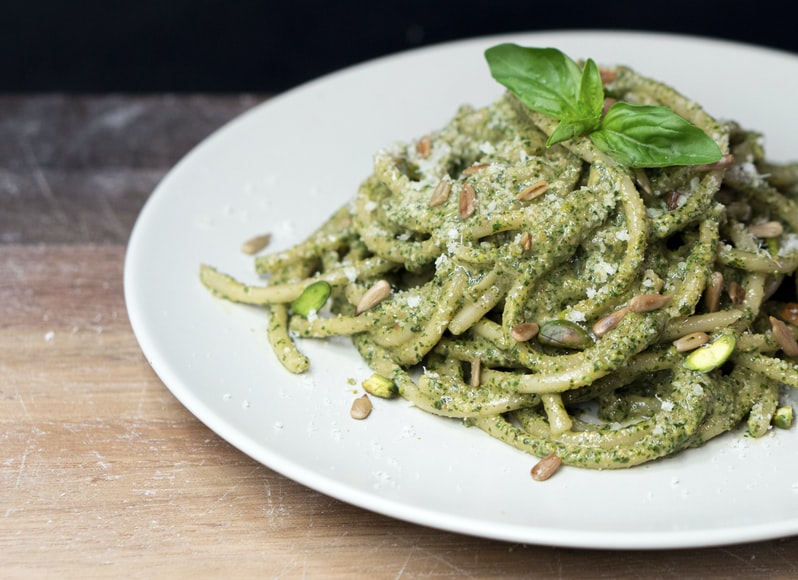

Linguine Pesto Rosso

Delicious Linguine Pesto Rosso
quick healthy meal that taste great!
Ingredients
- 1 cup shelled pistachio nuts
- ½ cup pine nuts
- 3 large unpeeled cloves garlic
- 1 cup firmly packed fresh basil leaves
- ½ cup extra-virgin olive oil
- 1 teaspoon coarse sea salt
- ½ teaspoon coarsely cracked black pepper
- ½ teaspoon crushed red pepper
- 1 pound dried linguine
- 1 pound cherry tomatoes, halved
- ½ cup shredded Parmigiano-Reggiano cheese
Steps
- Heat a large heavy-bottomed skillet over medium heat. Pile in pistachios and pine nuts. Cook, stirring frequently, until light brown and incredibly nutty-smelling, 3 to 5 minutes. Transfer to a food processor.
- Add garlic to the skillet and cook, turning occasionally, until softened and browned in patches, about 5 minutes. Remove to a plate to cool.
- Peel cooled garlic and add to the food processor, along with basil, and process. With the blade still running, drizzle oil in through the chute. Once incorporated, transfer to a large bowl. Stir in salt, black pepper, and red pepper.
- Meanwhile, bring a large pot of lightly salted water to a boil. Cook linguine at a boil until tender yet firm to the bite, about 11 minutes. Reserve about 3/4 cup pasta water. Drain remaining water from pasta and give the colander a good shake or two.
- Add pasta and tomatoes to pesto. Give it all a good mix and drizzle in enough of the reserved pasta water to get the nutty pesto to coat the pasta. Sprinkle with Parmigiano-Reggiano cheese.
click here to return home